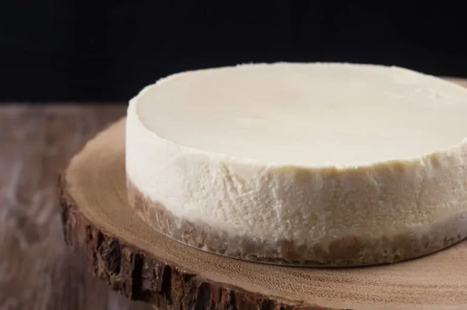

Instant Pot New York Cheesecake #17

Description
In only 40 minutes you can make your choice of a classic, creamy cheesecake or a rich, dense cheesecake using your Instant Pot! All you need are the usual ingredients, your pressure cooker/Instant Pot, and a bit of time and care.
Ingredients
Crust
- 10 graham crackers finely ground
- 4 tbsp unsalted butter melted
- sea salt
- 2 tsp - 1½ tbsp brown sugar (per desired sweetness)
- ¼ cup flour (Optional for blind-baking crust)
Batter
- 16 ounces cream cheese
- 2 large eggs
- ⅔ cup white sugar
- ½ cup sour cream
- 2 tbsp cornstarch
- 2 tsp vanilla extract
- 2 pinches sea salt
Steps
-
Place 16 ounces (454g) cream cheese, 2 large eggs, ½ cup (120g) sour cream on counter-top to reach room temperature. Then, melt the 3 - 4 tablespoons (42g - 56g) unsalted butter.*Pro Tip: this is critical for your cheesecake's success, so please make sure all the above ingredients are at room temperature before you start. If not, you may end up with lumpy fluff top cheesecake. So don't skip this step!
-
Ground Graham Crackers: Finely ground 120g graham crackers in a food processor. Or place the graham crackers in a Ziploc bag and roll them with a rolling pin.
-
Mix Crust Mixture: In a small mixing bowl, mix finely ground graham crackers, a pinch of sea salt, 2 tsp - 1 1/2 tbsp (8.3g - 19g) brown sugar together with a fork.
-
See the rest of this recipe at pressurecookrecipes.com